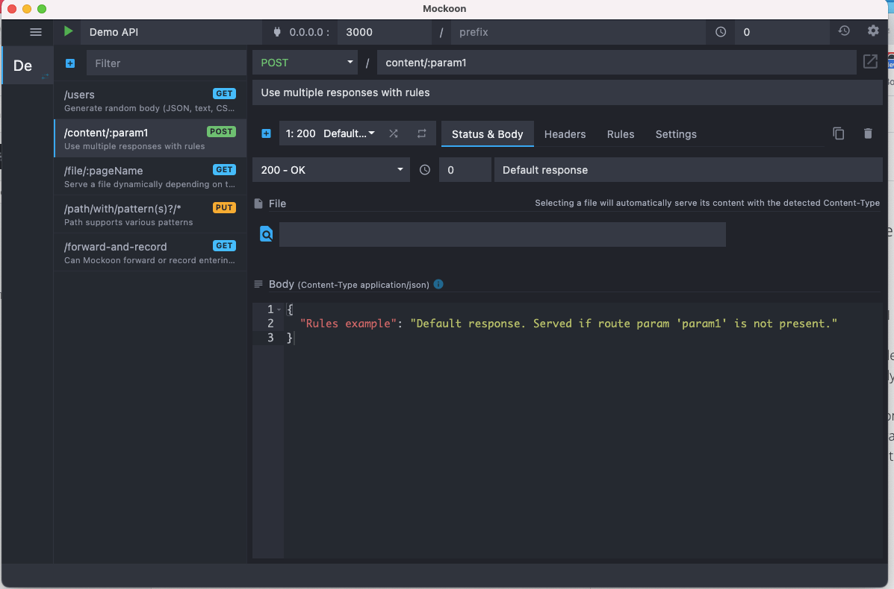

Recently, I have spent considerable time researching and analyzing the tooling available for "API first". At the core of this eco-system is the OAS (Open API specification) or interface as we normally like to call it.
OAS (Open API Specification)
OAS (or what was commonly known as swagger spec) is the industry standard for defining REST interfaces. I had previously worked with many others such as RAML and Blueprint, but it's good to see we have a winner! Latest release of OAS (V3.x) includes webhook support and the latest JSON schema draft. Open API is now under the governance of the Linux Foundation. The OpenAPI Specification was originally based on the Swagger Specification, donated by SmartBear Software.
Mocking
The term "mock" for a lot of developers will have unit-testing connotations. In unit-testing, a mock is a fake implementation of a class or function, which accepts the same arguments as the real thing. It might return something pretty similar to the expected output, and different test cases might even modify those returns to see how the code under test works.
This is almost exactly the concept here, just at a HTTP level instead. This is done using a "mock server", which will respond to the expected endpoints, error for non-existent endpoints, often even provide realistic validation errors if a client sends it an invalid request.
So today, I am going to talk about mocking REST APIs. Anyone that has worked in cross-functional teams before would be very used to mocking APIs for local development. If for example, your team consisted of front and back-end devs, normally the BE devs would aim to design the interface upfront (API first) and provide a mock API to FE devs to commence development in parallel.
Why?
Both streams of work should occur in parallel, rather than sequentially. Less waterfall!
But there are many other benefits of mocking APIs such as:
- Showcasing to stakeholders the interactions as part of the API design process
- Showcase to external consumers
- Use as a sandbox on the dev portal
- Integration testing on CI ("shift testing left")
- Performance testing on CI ("shift perf left")
Tools
I have used many frameworks and tools in the past to mock APIs. When I developed with typescript or nodeJS, a framework I used heavily was expressJS. Other tools out there include mountebank or wiremock. But now there is a new breed of mock API tools that are OAS compliant. Two that I have found recently are prism from stoplight and Mockoon.
Mockoon
Mockoon lets you mock an API in seconds
Some features include:
- Intuitive interface to create your mock API and run anywhere via CLI
- Integrates with your workflow - Compatible with the OpenAPI specification, Mockoon integrates perfectly with your existing applications and API design workflow.
- Advanced features and tackle the most complex situation with HTTP requests recording, proxying, integration testing, etc.
- Complex rules system and dynamic body templating
- Powerful forwarding and debugging
Creating our first API with Mockoon
Step1. Installation
Mockoon is available on the three major operating systems: Windows, macOS, and Linux.
You can install the native app here.
Step 2. Create your first mock API
After launching the application for the first time, you will find a demo mock API, also called "environment" in Mockoon. You can keep it and build from here or create a new one. To create a new mock API, open the collapsible environments menu on the left and press the blue "plus" button:

Step 3. Create your first API route
The newly created mock API already includes a route on /. You can modify it by setting up the method and path of your choice.
You can also create a new endpoint by clicking on the blue "plus" button at the top of the endpoint list:
Step 4. API endpoint configuration
You can further customize your endpoint by adding a custom header and the following sample body (which makes use of Mockoon's templating system).
Step 5. Run and call Mock API
The last step is to run your mock API. For this, click on the green "play" arrow in the header:
Your mock server is now available on http://localhost:3001 (but also on http://127.0.0.1 and all your local network adapters).
You can do a test call to the following URL http://localhost:3001/tutorials using your favorite tool (here using Insomnia) and see the returned response:
curl --request POST \
--url http://localhost:3001/tutorials
So now you have got the hang of it, let's look at its more advanced features and its "API first" support.
API first approach
So let's import a sample OAS file with Mockoon.
Step 1 Import OAS
Open the app and go to Import/Export > Swagger/Open API > Import Swagger v2/Open API v3
I have defined a sample OAS file here that you can use to follow along. Once you import, it now should look like this.
You can see that for each route, it has already been set up for you all the responses you have defined in the spec and the examples. You can easily toggle on random responses or sequential responses based on the route (NB: This will disable the rules tho)
It is even smart enough to convert certain fields weatherType and status to its templating language. How cool is that! And again, based on previous steps you can start the server and test it out via Insomnia.
Insomnia is such a powerful app also as it supports the "API first" approach. I can import in the exact same OAS file and test the endpoints. (You will start to see a recurring trend here of "API first" tools 😅)
Step 2 Run mock anywhere
Ok, so now we are happy with the mock responses, how can I run this anywhere?
Introducing Mockoon CLI 🎉🎉🎊🥳
Mockoon's perfect complement for all your headless and automated environments.
Mockoon CLI Supports all Mockoon's features, Lightweight and fast, and allows you to Run your mocks everywhere.
NB: Also available as a Docker image, run your mock APIs in Github Actions or on your favorite CI platform!
The CLI is a companion application to Mockoon's main interface designed to receive an exported Mockoon data file.
It has been written in JavaScript/TypeScript and uses some great libraries like oclif and PM2. One of the benefits of using PM2 is that you can easily manage your running mock APIs through the CLI or by using PM2 commands if you are used to them.
Step3. Install mockoon CLI
I installed using nodeJS
npm install -g @mockoon/cli
Step 4. Export your mock API to a JSON file
To export your environment, open the "Import/export" application menu and choose "Mockoon's format" -> "Export all environments to a file (JSON)" or "Export current environment to a file (JSON)".
You can then select a location to save the export data file. Let's name the file Greetings_Mockoon.json.
Step 5. Start your mock API
After exporting your data file, you are ready to run your API mock with the CLI.
In your terminal, navigate to the folder where your export data file is and run the following command:
mockoon-cli start --data ./Greetings_Mockoon.json
If you want to use a remotely hosted file, you can also provide a URL to the --data flag like this:
mockoon-cli start --data https://domain.com/data-export.json
Step 6. Manage your API mock
After running one or more API server mock, you might want to check their health and statuses. To do so you can type mockoon-cli list:
shanelee at shanes-MacBook-Air in ~/projects/mockoon-demo on main [?]
$ mockoon-cli list
Name Id Status Cpu Memory Hostname Port
──────────────────── ──── ───────── ────── ───────── ────────────── ──────
mockoon-greeting-api 0 online 0.5 71 MB 0.0.0.0 3002
You can also stop all running servers at once with mockoon-cli stop all
Step 7. View a running mock's logs
Mockoon CLI log all events like requests and errors in your user folder in the following files: ~/mockoon-cli/logs/{process_name}-out.log and ~/mockoon-cli/logs/{process_name}-error.log.
Step 8. Deploy Mockoon CLI using Docker
Now to the fun part! The CLI can containerize your mock API for you. The docker base image is node:14-alpine which is very lightweight.
Using the dockerize command
mockoon-cli dockerize --data ./Greetings_Mockoon.json --port 3000 --index 0 --output ./Dockerfile
Now build the image:
docker build -t mockoon-greeting-api .
And then run the container:
docker run -d -p 3000:3000 mockoon-greeting-api

Step 9. Use Mockoon CLI in a CI environment: GitHub Actions
Mockoon CLI being a Javascript application, it can run on any environment where Node.js is installed, including continuous integration systems like GitHub Actions, Buildkite, or CircleCI. It is useful when you want to run a mock server while running integration tests on another application. For example, you could mock the backend when running React front-end application tests. Or when you are running IT tests for a java based application that integrates with Greetings API.
Here is an example of a GitHub Action running a mock API (via docker) before running some tests:
name: Run mock API server
on: [push]
jobs:
run_integ_tests:
name: Run integ tests
runs-on: ubuntu-latest
services:
greetings:
image: shanelee007/mockoon-greeting-api:latest
ports:
- 3000:3000
steps:
- uses: actions/checkout@v2
- name: Set up JDK 11
uses: actions/setup-java@v2
with:
java-version: '11'
distribution: 'adopt'
- name: Cache Maven packages
uses: actions/cache@v2
with:
path: ~/.m2
key: ${{ runner.os }}-m2-${{ hashFiles('**/pom.xml') }}
restore-keys: ${{ runner.os }}-m2
- name: Build with Maven
run: mvn --batch-mode -ff -V --update-snapshots verify
So just to summarise with the "API first" approach I can:
- import an OAS to mockoon
- configure the routes (if needed)
- set some rules
- add dynamic templating to responses (more on this later)
- export this file, containerise using the CLI and run it as part of my CI build.
All within a matter of seconds!
Generating dynamic data
Mocking an API can save you time. By faking the backend responses early, you don't have to worry about whether an endpoint is ready or not. You are up and running in no time and can start implementing your application. However, your mock should still be realistic. And the examples provided in the OAS are often not enough to surface UI layout problems, container overflowed by text, etc.
When mocking using Mockoon, you can easily customize your endpoints to make them look like real ones and even behave realistically, thanks to the dynamic templating system.
Generate random fake data
Nowadays, most developers work with JSON. Generating a massive amount of fake JSON data with Mockoon is a breeze thanks to the powerful templating system based on Handlebars syntax.
Mockoon also offers multiple helpers and embarks the Faker.js library, which can generate localized random data as various as cities, addresses, first names, phone numbers, UUID, etc.
Complete JSON example: posts list
So let's revisit our Greetings API again. The API provides a GET request to return all greetings. So let's override the examples provided from OAS with much richer content.
By using a combination of repeat, image.avatar, lorem.sentences, etc. you can quickly get a massive amount of random data. Combined with the latency option, you can even simulate a slow server and check how your application behaves under stress.
To use the templating system, you only have to use the response body editor and start adding your content. Remember to use the double curly braces to delimit your helpers {{ helperName }} Let's have a look at what such a body could look like:
[
{{#repeat (queryParam 'total' '5')}}
{
"id": {{@index}},
"message": "{{faker 'lorem.sentence' 3 5}}",
"creationDate": "{{date '2020-11-20' '2020-11-25' "yyyy-MM-dd'T'HH:mm:ss.SSS'Z'"}}",
"label": "key",
"isFriendly": {{faker 'random.boolean'}},
"weatherType": "{{oneOf (array '1' '2' '3')}}",
"status": "{{oneOf (array 'SMILEY_FACE' 'SAD_FACE')}}"
}
{{/repeat}}
]
After a call to Mockoon, this would be the kind of body generated from this template:
[
{
"id": 0,
"message": "Earum veritatis est.",
"creationDate": "2020-11-24T17:32:33.293Z",
"label": "key",
"isFriendly": false,
"weatherType": "1",
"status": "SMILEY_FACE"
},
{
"id": 1,
"message": "Rerum ipsa autem.",
"creationDate": "2020-11-23T10:30:00.526Z",
"label": "key",
"isFriendly": true,
"weatherType": "3",
"status": "SAD_FACE"
},
{
"id": 2,
"message": "Porro aut dolores.",
"creationDate": "2020-11-22T21:03:58.452Z",
"label": "key",
"isFriendly": true,
"weatherType": "1",
"status": "SMILEY_FACE"
},
{
"id": 3,
"message": "Qui repudiandae quibusdam.",
"creationDate": "2020-11-22T09:13:08.923Z",
"label": "key",
"isFriendly": true,
"weatherType": "2",
"status": "SAD_FACE"
},
{
"id": 4,
"message": "Qui et voluptatem.",
"creationDate": "2020-11-22T08:36:19.770Z",
"label": "key",
"isFriendly": true,
"weatherType": "1",
"status": "SMILEY_FACE"
}
]
This example makes extensive usage of what Mockoon and Faker.js have to offer. First, it generates as many "greetings" items as provided in the total query parameter (or default to 5) when calling GET /your/endpoint?total=140. It is especially useful when you want to request a specific number of items depending on the pagination or a "number per pages" user setting. Second, you can see that multiple properties are defined, and random mock data is generated like sentence, date-time, boolean etc.
There are a lot of possibilities and combinations you can try. You can also make your template react to a lot of parameters from the entering request by using Mockoon's helpers. We've already seen queryParam above, but you will find many more in the templating documentation. They allow you to query the request information like body, urlParam, header, method, etc.
Mockoon does not limit you to JSON. The templating language based on Handlebars is compatible with any content type. It means that you can generate CSV, HTML, XML, etc. You will find below some examples of what can you can achieve with the templating system.
Generate dynamic templating depending on the request
We just saw some interesting use-cases but still quite simple. When working on your application, you may want to go a little bit further by making the template react to the request sent to Mockoon. This is possible by using various helpers that you will find in the templating documentation: body, queryParam, urlParam, cookie, header, hostname, ip, method, etc.
They allow you to access the entering request's information. Combined with other helpers like repeat, switch, or if, you will be able to dynamically generate more complex content.
You will find below some examples:
New greeting after a POST request
We will reuse in the response the various parameters present in the request:
{
"id": "{{faker 'random.uuid'}}",
"message": "{{body 'message'}}",
"creationDate": "{{date '2020-11-20' '2020-11-25' "yyyy-MM-dd'T'HH:mm:ss.SSS'Z'"}}",
"label": "{{body 'label'}}",
"isFriendly": {{body 'isFriendly'}},
"weatherType": {{body 'weatherType'}},
"status": "{{body 'status'}}"
}
After a call to this endpoint with the following body:
POST /greetings
Content-Type: application/json
{
"message": "Hello Docker",
"label": "key",
"isFriendly": true,
"weatherType": 0,
"status": "SMILEY_FACE"
}
We would receive this kind of response content, containing the request information plus some new fields (id and creationDate):
{
"id": "6df3c0c6-bce8-4094-ae29-5cb637fc15a3",
"message": "Hello Docker",
"creationDate": "2020-11-24T14:49:47.139Z",
"label": "key",
"isFriendly": true,
"weatherType": 0,
"status": "SMILEY_FACE"
}
For more complex cases or to test various error handling scenarios, you could also create multiple responses for the same route, with different bodies, and trigger them by defining some rules. To learn more about using multiple responses combined with rules, you can have a look at the related documentation.
Src files used in this post can be found on github